Project 4: Nodal Expansion Method¶
Quick Scrolling¶
Description
Description¶
This project involves the implementation of the nodal expansion method. Previously, the nodal expansion method has been implementated in-class. Therefore, this report will be documentation of how to use the module with Serpent while also introducing the extension of the in-class implemented done as part of this project.
The following 2D colorset is used in all calculations:
{kind=link}
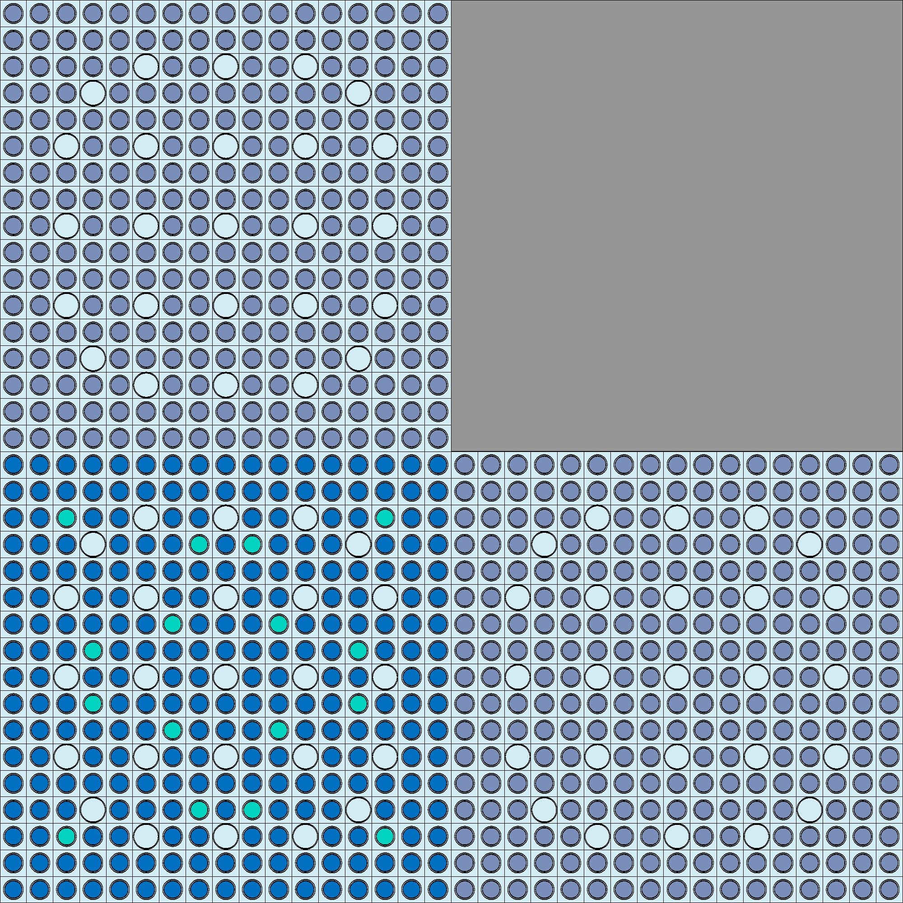
The assemblies are labelled as follows:
Top left - F12
Top right - Reflector
Bottom left - F2
Bottom right - F11
Methodology¶
The changes in methodology to the normal nodal expansion method consists of two parts:
Implementation for calculating transverse leakages in the y-direction.
Implementation of analytical integrals in lieu of using the Python symbolic toolbox.
Transverse y leakages¶
Transverse leakages in the y direction are implemented by essentially swapping the north/south directions with the
east/west directions in certain sections of the code - and vice versa. The following shows this implementation within nem.CartesianNem1D.TransverseLeakageCoef.
A direction attribute has also been added to change direction based on the user definition.
Other parts of the code have been modified as necessary but are not shown here for brevity.
# When we are solving in the y direction
elif self.direction == 'y':
trL = self.trL
dxi = self.dy # delta x in node i
Lyi = self.bc['eJnet']-self.bc['wJnet'] # y-dir TL eq.(9.19) (north minus south)
g = (dxi + trL['ndy'])*(dxi+trL['sdy'])*(dxi + trL['sdy']+trL['ndy'])
g = 1/g # inverse of g above
# calculate the coefficients (eq.9.19)
coefl0 = Lyi
coefl1 = g*dxi*(
(trL['nL']-Lyi)*(dxi+2*trL['sdy'])*(dxi+trL['sdy'])+
(Lyi-trL['sL'])*(dxi+2*trL['ndy'])*(dxi+trL['ndy']) )
coefl2 = g*(dxi**2)*(
(trL['nL']-Lyi)*(dxi+trL['sdy'])+(trL['sL']-Lyi)*(dxi+trL['ndy'])
)
# left term in (eq.9.11)
self.trlcoef = np.array([coefl0, coefl1, coefl2]) / self.dx
Analytical Integrals¶
The NEM was originally implemented using Pythons symbolic toolbox. This toolbox is very useful for the rapid evaluation of integrals and derivatives. However, the constant evaluation of integrals and derivatives is quite slow. Therefore, it was determined that analytical evaluations of all integrals and derivatives used within the NEM could potentially provide a great deal of speedup. Since the original implementation was mostly generalized, the analytical implementation was also made to be generalized.
Thus, we made convenient use of Python’s lambda functions to manually input the necessary basis functions and the integrals and derivatives that were necessary to evaluate. Lambda functions allow for generality and also allow one to dump relatively simple functions within aleady existing data structures that were previously used to store the symbolic representation of the integrals, derivatives, and basis functions.
An example is shown below for the implementation of the variable hpp.
def _hSecondDerivatives(self, L=0):
"""2nd derivative for all the expansion functions"""
if self.symbolic:
x = self.x
hpp = {}
for hIdx, hFunc in self.h.items():
hpp[hIdx] = sym.diff(hFunc, x, 2)
else:
hpp = {
0: lambda x: 0,
1: lambda x: 0,
2: lambda x: 3.0/L**2 * 2,
3: lambda x: 6*x / L**3,
4: lambda x: 12*x**2 / L**4 - 0.60 / L**2
}
self.hpp = hpp
To properly use the new implementation, in if statement was also added to nem.CartesianNem1D._ConsrevEqs when accessing the symbolic or analytical representation of the basis functions.
for ig in range(ng):
for hIdx, hFunc in h.items():
# Symbolic expression --- evaluate using xval
if self.symbolic:
eqs[ig, ig*nc+hIdx] = grMultp[ig]*hFunc.subs(self.x, xval)
else:
# Manually entered expressions --- just call the lambda function using xval.
eqs[ig, ig*nc+hIdx] = grMultp[ig]*hFunc(xval)
When evaluating a given function, the lambda function is simply called in lieu of using the symbolic representation.
Results¶
Transverse y leakages¶
The implementation of the transverse y leakage was done and problem was ran. The neutron flux for the F2-F12 and F11-Ref. columns is shown below. The NEM is able to closely match the flux in each group and each node.
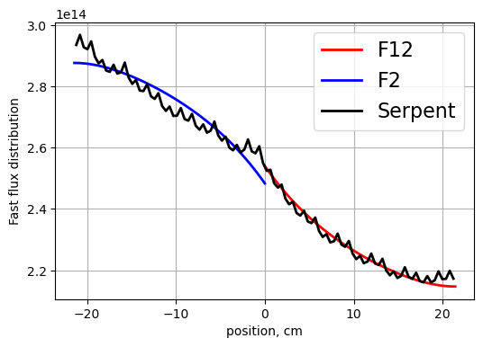 |

|
{kind=link}
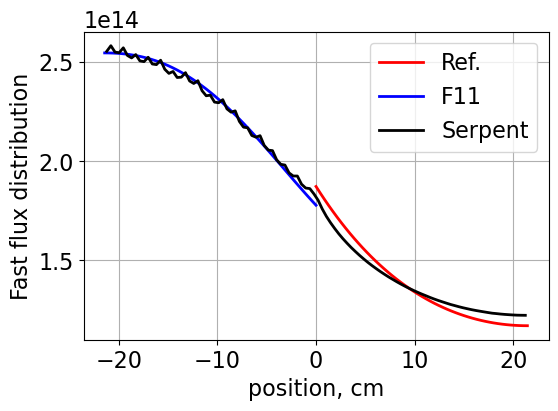 |
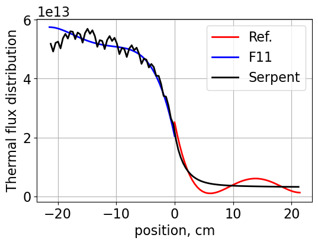 |
{kind=link}
{kind=link}
Also shown are the heterogenous neutron fluxes:
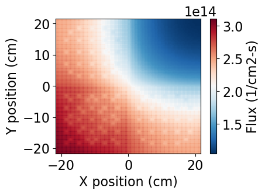 |
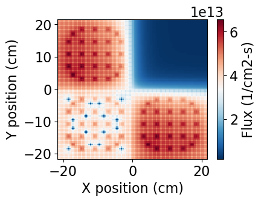 |
{kind=link}
{kind=link}
And finally the transverse leakages are plotted:
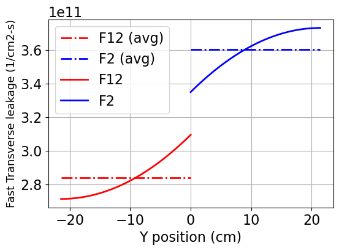 |
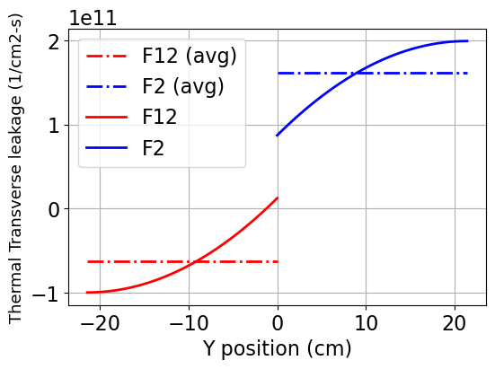 |
{kind=link}
{kind=link}
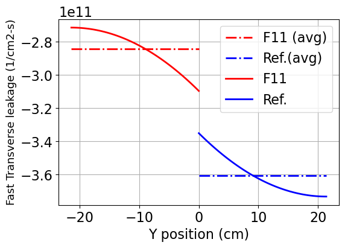 |
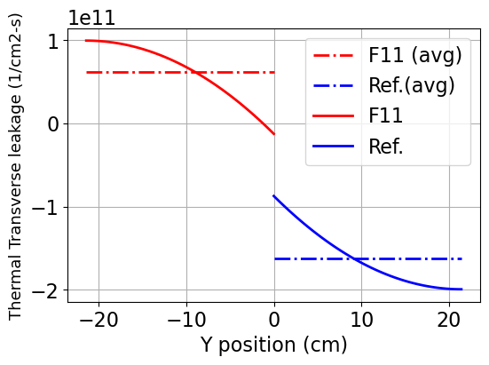 |
{kind=link}
{kind=link}
Analytical Integrals¶
To test the analytical integrals, a quick jupyter notebook function was written HERE.
The output is shown below:
hp
0: SYMBOLIC: 0 ANALYTICAL: 0
1: SYMBOLIC: 0.0466853408029879 ANALYTICAL: 0.046685340802987856
2: SYMBOLIC: 0.280112044817927 ANALYTICAL: 0.2801120448179271
3: SYMBOLIC: 0.128384687208217 ANALYTICAL: 0.1283846872082166
4: SYMBOLIC: 0.158730158730159 ANALYTICAL: 0.15873015873015872
hpp
0: SYMBOLIC: 0 ANALYTICAL: 0
1: SYMBOLIC: 0 ANALYTICAL: 0
2: SYMBOLIC: 0.0130771262753467 ANALYTICAL: 0.013077126275346736
3: SYMBOLIC: 0.0130771262753467 ANALYTICAL: 0.013077126275346738
4: SYMBOLIC: 0.0248465399231588 ANALYTICAL: 0.024846539923158804
hint
0: SYMBOLIC: 21.4200000000000 ANALYTICAL: 21.42
1: SYMBOLIC: 10.7100000000000 ANALYTICAL: 10.71
2: SYMBOLIC: 16.0650000000000 ANALYTICAL: 16.065
3: SYMBOLIC: 2.67750000000000 ANALYTICAL: 2.6775
4: SYMBOLIC: 2.40975000000000 ANALYTICAL: 2.40975
hh1int
0: SYMBOLIC: 10.7100000000000 ANALYTICAL: 10.71
1: SYMBOLIC: 7.14000000000000 ANALYTICAL: 7.14
2: SYMBOLIC: 13.3875000000000 ANALYTICAL: 13.387500000000001
3: SYMBOLIC: 2.49900000000000 ANALYTICAL: 2.499
4: SYMBOLIC: 2.09737500000000 ANALYTICAL: 2.0973749999999995
hh2int
0: SYMBOLIC: 16.0650000000000 ANALYTICAL: 16.065
1: SYMBOLIC: 13.3875000000000 ANALYTICAL: 13.387500000000001
2: SYMBOLIC: 29.1847500000000 ANALYTICAL: 29.184749999999998
3: SYMBOLIC: 6.02437500000000 ANALYTICAL: 6.024375
4: SYMBOLIC: 4.98971250000000 ANALYTICAL: 4.989703320000001
hpph1int
0: SYMBOLIC: 0 ANALYTICAL: 0
1: SYMBOLIC: 0 ANALYTICAL: 0
2: SYMBOLIC: 0.140056022408964 ANALYTICAL: 0.14005602240896356
3: SYMBOLIC: 0.0933706816059757 ANALYTICAL: 0.09337068160597571
4: SYMBOLIC: 0.126050420168067 ANALYTICAL: 0.12605042016806725
hpph2int
0: SYMBOLIC: 0 ANALYTICAL: 0
1: SYMBOLIC: 0 ANALYTICAL: 0
2: SYMBOLIC: 0.210084033613445 ANALYTICAL: 0.21008403361344535
3: SYMBOLIC: 0.175070028011204 ANALYTICAL: 0.17507002801120447
4: SYMBOLIC: 0.268440709617180 ANALYTICAL: 0.2684407096171802
As shown, all the evaluations match for the symbolic and the analytical implementations.
Moreso, the analytical implementation was tested for an actual problem. The original problem was ran and results are plotted below for the F12-F2 column.
They exactly match the results from before.
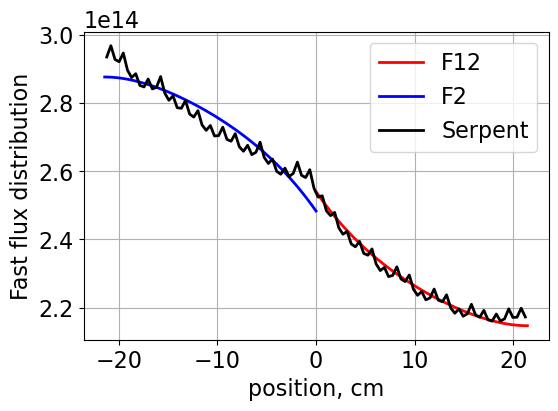 |
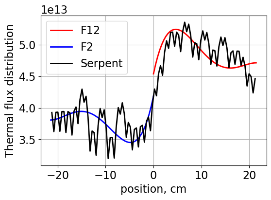 |
{kind=link}
{kind=link}
Finally, the speedup was compared by running both the analytical and symbolic problems. The jupyter cells are shown HERE
The speedup was determined to be a factor of 158x when comparing the symbolic and analytical execution times!
Summary¶
In summary, the goal of this work was to first develop the nodal expansion method considering the transverse leakages in the x direction. Once done, the task was then to generalize NEM for 2D problems in both the x and y directions. A colorset was ran in the y direction and the solution was found to match the reference solution from Serpent.
Then, the “lazy” symbolic approach in Python was updated with the true analytical approach and it was found that problem was sped up by a factor of 158! In larger or iterative problems this speedup would certainly be extremely useful.
Jupyter Notebook¶
A Jupyter notebook is given for the calculations performed HERE
Classes and Objects¶
CartesianNem1D class developed in class and as part of HW
nem.CartesianNem1DSerpent results grabber developed in class:
nem.GetSerpentRes1D plotter developed in class:
nem.Plot1d2D plotter developed as part of HW
nem.Plot2d